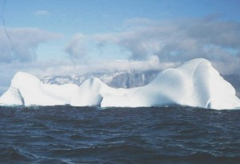

ICRM activities are largely the responsibility of its working groups. Each group is guided by a coordinator who acts as a centre for ideas and communications and may organize conferences and workshops. There are now seven working groups with the following fields of interest and assigned coordinators:
-
Alpha-Particle Spectrometry: S. Pommé, European Commission, Joint Research Centre (EC-JRC), Institute for Reference Materials and Measurements (IRMM), Retieseweg 111, B-2440 Geel, Belgium,
e-mail: stefaan.pomme@ec.europa.eu -
Beta-Particle Spectrometry: X. Mougeot, Laboratoire National Henri Becquerel (LNE-LNHB), CEA-Saclay, F-91191 Gif-sur-Yvette Cedex, France,
e-mail: xavier.mougeot@cea.fr -
Gamma-Ray Spectrometry: M.-C. Lépy, Laboratoire National Henri Becquerel (LNE-LNHB), CEA-Saclay, F-91191 Gif-sur-Yvette Cedex, France,
e-mail: marie-christine.lepy@cea.fr -
Liquid Scintillation Counting: K. Kossert, Physikalisch-Technische Bundesanstalt (PTB), Bundesalle 100, D-38116 Braunschweig, Germany,
e-mail: karsten.kossert@ptb.de -
Low-Level Measurement Techniques: Daniel Zapata, Physikalisch-Technische Bundesanstalt (PTB), Bundesalle 100, D-38116 Braunschweig, Germany, e-mail: daniel.zapata@ptb.de
Begoña Quintana-Arnés, Catedrática de Física Atómica, Molecular y Nuclear Laboratorio de Radiaciones Ionizantes y Datación, Edificio de I+D+i, c) Espejo 2, 37007-Salamanca, Spain, email: quintana@usal.es
Subgroup QA near decision threshold (etc.): M. Korun, Jožef Stefan Institute (JSI), Jamova cesta 39, 1000 Ljubljana, Slovenia,
email: matjaz.korun@ijs.si -
Life Sciences: J. Cessna, National Institute of Standards and Technology (NIST), Gaithersburg, Maryland, 20899-8462, U.S.A.,
e-mail: jeffrey.cessna@nist.gov -
Nuclear Decay Data: M. Kellett, Laboratoire National Henri Becquerel (LNE-LNHB), CEA-Saclay, F-91191 Gif-sur-Yvette Cedex, France,
e-mail: mark.kellett@cea.fr Radionuclide Metrology Techniques: R. Fitzgerald, Physical Measurement Laboratory, National Institute of Standards and Technology (NIST), Gaithersburg, Maryland, 20899-8462, U.S.A.,
e-mail: ryan.fitzgerald@nist.govC. Bobin, Laboratoire National Henri Becquerel (LNE-LNHB), CEA-Saclay, F-91191 Gif-sur-Yvette Cedex, France,
e-mail: Christophe.bobin@cea.frSubgroup DCC: J. Keightley, National Physical Laboratory (NPL), Hampton Road, Teddington, Middlesex, TW11 0LW, UK,
e-mail: John.Keightley@npl.co.ukSubgroup Internal Gas Counting: S. Bell, National Physical Laboratory (NPL), Hampton Road, Teddington, Middlesex, TW11 0LW, UK,
e-mail: steven.bell@npl.co.ukSubgroup Large Area Sources: O. Nähle, Physikalisch-Technische Bundesanstalt (PTB) Bundesallee 100, 38116 Braunschweig,
e-mail: ole.j.naehle@ptb.de
Alpha-Particle Spectrometry Working Group
Within the last years, the development of new techniques for the fabrication of Si detectors and the design of new measurement chambers, has produced considerable advances in the field of alpha-particle spectrometry with semiconductor detectors. Peak resolutions are now close to 8.5 keV, approaching the theoretical limit attainable with this kind of detectors. From the side of numerical analysis of spectra, a major effort has been dedicated by several laboratories to produce reliable fitting programs. Although it is difficult to give a comprehensive listing of activities, the following items describe the main areas of research.
- Development of new measurement techniques
- Improvement of fitting programs
- Measurement of nuclear data with emphasis on alpha-particle emission probabilities
- Computer simulation of the physical processes in the detector and source
Beta Particle Spectrometry Working Group
This Working Group is devoted to the development of the metrological aspects of beta-particle spectrometry and its applications. This includes, but is not restricted to:
- Theory
- Beta (β±) and electron capture (ε) transitions
- Theoretical shape factors and influence of the nuclear current
- Atomic effects
- Experiments
- Instrumentations used for beta spectrometry
- Techniques that need beta information
- Confidence on experimental shape factors
- Data analysis and unfolding methods
- Simulations
- Confidence on the physical processes: low energies, radioactive decays, atomic rearrangements
- Comparison of the results of different codes: Geant4, Penelope, etc.
- Evaluations and dissemination
- Confidence and uncertainties on experimental shape factors
- Evaluation procedure for establishing recommended experimental shape factors
- Mean energies, log ft values, database
Other suggested topics are welcome.
Gamma-Ray Spectrometry Working Group
Gamma-ray spectrometry is a widely used analysis technique, with applications in a large range of fields and expertise. The ICRM Gamma Spectrometry Working Group (GSWG) is devoted to the development of the metrological aspects of gamma-ray spectrometry and its applications.
This includes, but is not restricted to:
- Characterization of measurement techniques and instrumentation,
- Determination of photon emission intensities,
- Determination and assessment of corrective factors and uncertainties,
- Determination of activity of gamma-emitting radionuclides for industrial, or safety applications, etc.
The GSWG promotes collaboration between the WG members to improve the analytical techniques and distributes practical information in order to disseminate the knowledge and know-how to various laboratories.
 Liquid Scintillation Working Group
Liquid Scintillation Working Group
The purpose of the Liquid Scintillation Counting Working Group is to provide a forum for ICRM members to address issues related to liquid scintillation and Čerenkov counting. In particular, the CIEMAT/NIST efficiency tracing and the Triple-to-Double-Coincidence Ratio (TDCR) methods play major roles in Radionuclide Metrology. In the past two decades, many new developments were presented by ICRM researchers, e.g., new counter systems, new electronics for signal treatment and data acquisitions, investigations of existing models and extensions of calculation procedures. These methods are used for activity standardization of a growing number of radionuclides as well as for determination and validation of radionuclide decay data.
Low Level Measurement Techniques Working Group
The ICRM working group for Low-Level Measurements Techniques (LLMT) examines techniques to enable the detection of ever smaller amounts of radioactivity. This enables, for example, collecting smaller samples and realising new applications involving radionuclides. The working group focuses on metrology and the latest developments in a variety of areas, including measurement of environmental radioactivity, radionuclides in food and drinking water, reference materials characterisation, tracer studies and nuclear physics research. Conference proceedings are published in refereed scientific journals.
The Low-Level Radioactivity Measurement Techniques (ICRM-LLRMT) 2020 Conference is a five-day topical meeting of the International Committee for Radionuclide Metrology (ICRM). The INFN-LNGS is pleased to host the conference at the Gran Sasso National Laboratory in Italy, 2-6 May 2022 . https://icrm2022.lngs.infn.it. The conference brings together 130-150 worldwide experts for presentations and discussion covering the techniques, applications and data in the field of low-level radioactivity measurement. The conference in 2022 will be the first time it is hosted in the Italy.
It is foreseen that proceedings will be published in a refereed international journal (such as, for example, Applied Radiation & Isotopes). Abstracts will be asked to be submitted late in 2021 at the conference website.
Nuclear Decay Data Working Group
The Nuclear Decay Data Working Group (3NDWG) facilitates awareness and communications between ICRM members interested in the measurement, calculation, compilation and evaluation of decay data, and the maintenance of computer-based decay data files (e.g., half-lives; energies and emission probabilities of alpha particles, beta particles, gamma rays, x-rays, conversion electrons and Auger electrons; internal conversion coefficients; transition types; and other relevant parameters, including uncertainties).
Members of the 3NDWG are encouraged to use the Working Group to communicate experimental and theoretical work, relevant evaluation procedures, their decay data problems, and to establish methodologies that are fully consistent with the satisfactory production of recommended decay data.
The 3NDWG Coordinator strives to maintain satisfactory links between all active members to achieve the primary aim (see above), and to inform them of all relevant activities identified with the creation and maintenance of decay-data files.
Life Sciences Working Group
The purpose of the Life Sciences Working Group is to provide a forum for ICRM members to address radionuclide metrology issues as they relate to the life sciences. Issues may include, but are not limited to: development of methodologies to calibrate short-lived radionuclides of interest in nuclear medicine, measurement of decay properties (half-lives, decay energies and probabilities, etc.) of radionuclides used in nuclear medicine and biological research, development of measurement methodologies for transferring National Measurement Standards to the clinic and research laboratory, and development of methods to perform radioactivity assays of brachytherapy sources. The Working Group will facilitate finding solutions to these problems through workshops, publications, electronic communications (i.e., email), and collaborative work. The Coordinator will maintain communication links between the members and will periodically report to the group new issues and advancements in the field.
Coordinator's Annual Report (PDF)
LSWG Meeting, 12-13 November 2008, NPL, Teddington, UK
Radionuclide Calibrator Measurements
Radionuclide Metrology Techniques Working Group
The ICRM Radionuclide Metrology Working Group (RMT-WG) consists of experts in the field of radionuclide metrology. Meetings of the RMT-WG are held approximately annually as a forum for practitioners to share ongoing developments, gain input from peers on challenges, and work together to address common needs. Historically, a focus has been on 4πβ-γ coincidence counting, and its variants. More recently, that topic has broadened to address the metrology of counting for a variety of measurement methods, and especially the many aspects of absolute counting using digital electronics, which has become an RMT-WG subgroup. Radioactive gas counting and large area source measurements are also fields of significant interest to become subgroups of RMT-WG. The RMT-WG covers other topics important to the radionuclide metrology community, from quantitative source preparation to informing the community about proper citations in manuscripts. To this end, the RMT-WG liaises with other ICRM WGs, the CCRI(II) and its WGs, the BIPM, and other stakeholders.